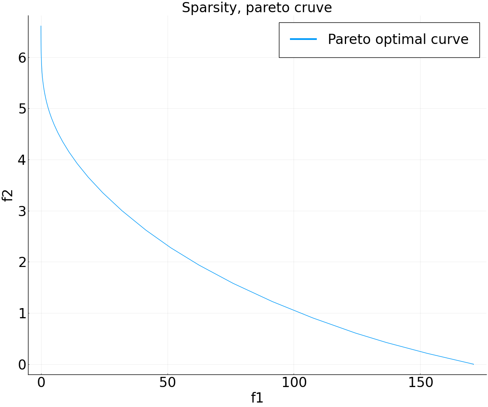
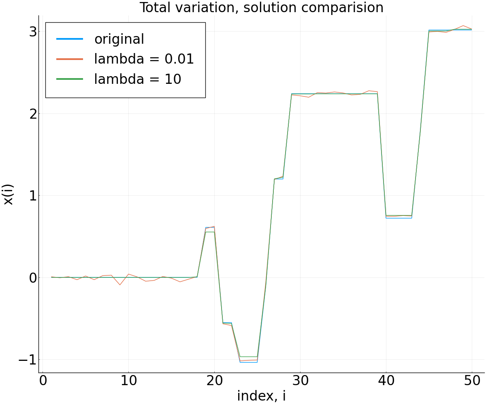
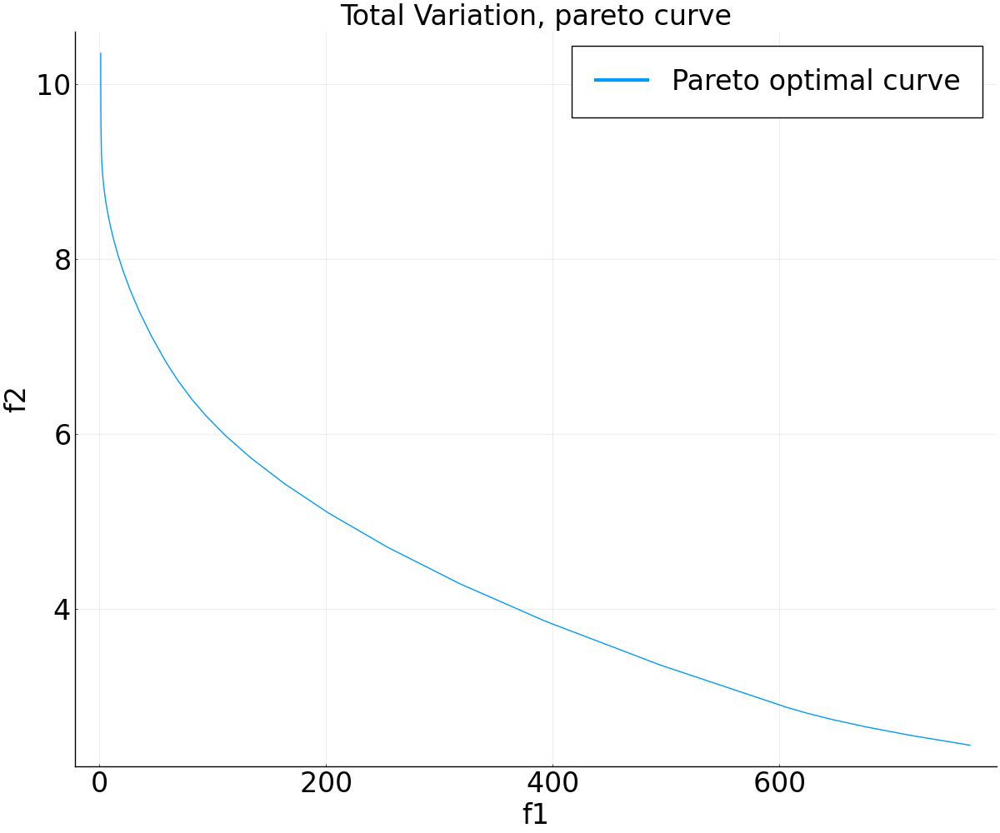

Homework 2 solution¶
using Random
using LinearAlgebra
using Convex
using ECOS
using Plots
using JLD
using CSV
using DataFrames
-
Since both \vnull(A) and \vnull(L) are subspaces, if 0\neq u\in \vnull(A) \cap \vnull(L) then any scaling \gamma u\in \vnull(A) \cap \vnull(L). So, if x^* solves the problem, then any x^*+ \gamma u also solves the problem, since A(x^*+\gamma u) = Ax^* and L(x^*+\gamma u) = Lx^*.
To show the other direction, suppose that the solution to the optimization problem is not unique. That is, there exists x\neq y where
(A^TA + \lambda L^TL) x = A^Tb \text{ and } (A^TA + \lambda L^TL) y = A^Tb.Since we put no limitations on x and y (except that x\neq y) this implies that there exists some u\neq 0 where
(A^TA + \lambda L^TL) u = 0.This implies
u^TA^TAu + \lambda u^TL^TLu = \|Au\|_2^2 + \lambda \|Lu\|_2^2 = 0.Since both terms being added are nonnegative, both terms must be 0.
\|Au\|_2 = 0 \iff Au = 0, \quad \|Lu\|_2 = 0 \iff Lu = 0.Therefore u\in \vnull(A) \cap \vnull(L), and u\neq 0.
-
Multiobjective problems
-
2-norm regularization The solution is x =(A^TA+\gamma I)^{-1} A^Tb. So,
\begin{align*} \|x\|_2^2 =& \|(A^TA+\gamma I)^{-1} A^Tb\|_2^2 \\ =& \|(QDQ^T+\lambda QQ^T)^{-1} A^Tb\|^2\\ =& \|(D-\lambda I)^{-1}Q^TA^Tb\|_2^2\\ =& \sum_{i=1}^n \frac{1}{(d_i+\gamma)^2} g_i^2. \end{align*}Sketch:
-
Sparsity The following code provides accuray and sparsity measure for λ = 1.
#part 2a. # load data A = load("hw2_p2_smooth_A.jld")["data"] b = load("hw2_p2_smooth_b.jld")["data"] # load signal x0 = load("hw2_p2_smooth_signal.jld")["data"] (m,n) = size(A) x_var = Variable(n); loss = sumsquares(A*x_var-b) reg = sum(abs(x_var[2:end]-x_var[1:end-1])) λ = 1 problem = minimize(loss+λ*reg) solve!(problem,ECOSSolver(verbose=false)) xa = x_var.value; free!(x_var);# println("accuracy f1 = $(0.5*norm(A*xa-b,2)^2) and sparsity f2 = $(norm(xa,1))")The value of f_1(x) = 0.619 and f_2(x) = 3.332.
-
The following code plots the solution for \lambda = 0.1 and \lambda = 10.
λ = .001 problem = minimize(loss+λ*reg) solve!(problem,ECOSSolver(verbose=false)) xb = x_var.value; free!(x_var) λ = 10 problem = minimize(loss+λ*reg) solve!(problem,ECOSSolver(verbose=false)) xc = x_var.value; free!(x_var) pyplot(size=(1200,1000), legend = true, legendfontsize=24, xguidefontsize=24, yguidefontsize=24, xtickfontsize=24, ytickfontsize=24, titlefontsize = 24) plot_temp = plot(1:n, [x0,xb,xc], label = ["original" "lambda = 0.01" "lambda = 10"], xlabel="index, i", ylabel="x(i)", title = "Sparsity, solution comparision") savefig(plot_temp, "figures/hw2_p2_c.png")
-
The following code plots the pareto optimal curve for the sparsity case.
# generate logspace between -3,3 Lambda = exp10.(range(-3, stop=3, length=100)) f1_values = [] f2_values = [] for i in 1:100 λ = Lambda[i] problem = minimize(loss+λ*reg) solve!(problem,ECOSSolver(verbose=0)) xd = x_var.value; free!(x_var) push!(f1_values, 0.5*norm(A*xd-b,2)^2) push!(f2_values, norm(xd,1)) end pyplot(size=(1200,1000), legend = true, legendfontsize=24, xguidefontsize=24, yguidefontsize=24, xtickfontsize=24, ytickfontsize=24, titlefontsize = 24) plot_temp = plot(f1_values, f2_values, label = "Pareto optimal curve", xlabel="f1", ylabel="f2", title = "Sparsity, pareto cruve") savefig(plot_temp, "figures/hw2_p2_d.png") -
The following code plots the solution for \lambda = 0.1 and \lambda = 10. It also provides the accuray and total variation measure for \lambda = 1.
# load data A = load("hw2_p2_smooth_A.jld")["data"] b = load("hw2_p2_smooth_b.jld")["data"] # load signal x0 = load("hw2_p2_smooth_signal.jld")["data"] x_var = Variable(n); (m,n) = size(A) loss = sumsquares(A*x_var-b) reg = sum(abs(x_var[2:end]-x_var[1:end-1])) λ = 1 problem = minimize(loss+λ*reg) solve!(problem,ECOSSolver(verbose=false)) xa = x_var.value; free!(x_var);# println("accuracy f1 = $(0.5*norm(A*xa-b,2)^2) and sparsity f2 = $(norm(xa,1))") λ = .001 problem = minimize(loss+λ*reg) solve!(problem,ECOSSolver(verbose=false)) xb = x_var.value; free!(x_var) λ = 10 problem = minimize(loss+λ*reg) solve!(problem,ECOSSolver(verbose=false)) xc = x_var.value; free!(x_var) plot_temp = plot(1:n, [x0,xb,xc], label = ["original" "lambda = 0.01" "lambda = 10"], xlabel="index, i", ylabel="x(i)", title = "Total variation, solution comparision") savefig(plot_temp, "figures/hw2_p2_e.png")For λ = 1, the value of f_1(x) = 0.652 and f_2(x) = 20.310.
 -
The following code plots the pareto optimal curve for the total vairation case.
# generate logspace between -3,3 Lambda = exp10.(range(-3, stop=3, length=100)) f1_values = [] f2_values = [] for i in 1:100 λ = Lambda[i] problem = minimize(loss+λ*reg) solve!(problem, ECOSSolver(verbose=false)) xd = x_var.value; free!(x_var) push!(f1_values, 0.5*norm(A*xd-b,2)^2) push!(f2_values, norm(xd,1)) end plot_temp = plot(f1_values, f2_values, label = "Pareto optimal curve", xlabel="f1", ylabel="f2",title = "Total Variation, pareto curve") savefig(plot_temp, "figures/hw2_p2_d.png")
-
-
Non-linear least squares
-
The gradient is
\nabla f(x) = 4\sum_{i=1}^m (\|x-c_i\|_2^2 - d_i^2 )(x-c_i). -
r(x) = \bmat\|x-c_1\|_2^2 - d_1^2 \\ \vdots \\ \|x-c_m\|_2^2 - d_n^2 \emat, \qquad J(x) = \bmat 2(x-c_1)^T \\ \vdots \\ 2(x-c_m)^T. \emat
-
In the Gauss-Newton method, we attempt to solve at each iteration
\minimize{x\in \Re^n} \quad \|r(\bar x) + J(\bar x) (x-\bar x)\|_2^2where \bar x = x^{(k)} the current iterate. Taking
A = J(\bar x) \in \Re^{m\times n}, \quad b = J(\bar x) \bar x-r(\bar x)the above problem becomes a least squares problem
\minimize{x\in \Re^n} \quad \|Ax-b\|_2^2with normal equations
A^TAx = A^Tb.The solution to the normal equations is unique if and only if A^TA is invertible--that is, if A has full column rank. Since we are assuming n = 2, we need only verify that \rank(A) = 2.
Expanding
A = J(\bar x)= \bmat 2(\bar x-c_1)^T \\ \vdots \\ 2(\bar x-c_m)^T. \ematwhich has rank 2 under our assumptions.
-
The plot of f(x^{(k)}) for k = 1,\dots,100, for all four solvers, is shown below:
Gradient descent: \bar \alpha = 6.66 \times 10^{-8}, whereas Gauss-Newton \bar \alpha = 1. (Anything super small for GD and 1 for Gauss-Newton is acceptable.)
(Any answers for qualitative observations is acceptable.) Possible observations:
-
Gauss Newton is much more tolerant of larger step sizes than gradient descent, suggesting better numerical stability.
-
Overall, using line search greatly improves method performance. However, there is a complexity tradeoff, since line search requires checking a condition many times.
Here's the code:
C = load("hw2_p3_C.jld")["data"] d = load("hw2_p3_d.jld")["data"] # load signal x0 = load("hw2_p3_signal.jld")["data"] s = 1 α = 0.5 β=0.5 epsilon = 10^(-4) #Gradient descent with constant step size x = [] obj_gd = [] push!(x, [1000;-500]) for iter in 1:100 x_temp = x[iter] r = sum((C.-x_temp).^2,dims=1)' - d.^2; push!(obj_gd, norm(r,2)^2/2) g = 4*sum((ones(2,1)*r').*(x_temp.-C),dims = 2) push!(x, x_temp - g/15000000); end pyplot(size=(1200,1000), legend = true, legendfontsize=24, xguidefontsize=24, yguidefontsize=24, xtickfontsize=24, ytickfontsize=24, titlefontsize = 24) plot_temp = plot(obj_gd,yaxis=:log, label = "Grad. desc. constant") #Gradient descent with line search x = [] obj_gd_line = [] push!(x, [1000;-500]) for iter in 1:100 x_temp = x[iter] r = sum((C.-x_temp).^2,dims=1)' - d.^2; push!(obj_gd_line, norm(r,2)^2/2) g = 4*sum((ones(2,1)*r').*(x_temp.-C),dims = 2) global t = s global obj_cand = obj_gd_line[iter] while (obj_gd_line[iter] .- obj_cand .- α*t*(g'*g))[1] < 1e-10 global t = t*β xcand = x_temp .- t*g rcand = sum((C.-xcand).^2,dims=1)' .- d.^2; global obj_cand = norm(rcand,2)/2 end push!(x, x_temp - t*g); end plot!(obj_gd_line,yaxis=:log, label = "Grad. desc. line search") #Gauss newton with constant step size x = [] obj_gd_gauss = [] push!(x, [1000;-500]) for iter in 1:100 x_temp = x[iter] r = sum((C.-x_temp).^2,dims=1)' - d.^2 push!(obj_gd_gauss, norm(r,2)^2/2) J = (x_temp.-C)' z = J \ r push!(x, x_temp-z) end plot!(obj_gd_gauss,yaxis=:log, label = "Gauss-Newton constant") #Gauss newton with line search x = [] obj_gd_gauss_line = [] push!(x, [1000;-500]) for iter in 1:100 x_temp = x[iter] r = sum((C.-x_temp).^2,dims=1)' - d.^2 push!(obj_gd_gauss_line, norm(r,2)^2/2) J = (x_temp.-C)' z = J \ r global t = s global obj_cand = norm(r,2)^2/2 g = 4*sum((ones(2,1)*r').*(x_temp.-C),dims = 2) while (obj_gd_gauss_line[iter] .- obj_cand .- α*t*(g'*z))[1] < 1e-10 global t = t*β xcand = x_temp .- t*z rcand = sum((C.-xcand).^2,dims=1)' .- d.^2; global obj_cand = norm(rcand,2)/2 end push!(x, x_temp-t*z) end plot!(obj_gd_gauss_line,yaxis=:log,label= "Gauss-Newton line search") savefig(plot_temp, "figures/hw2_p3_d.png") -
-